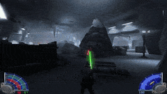
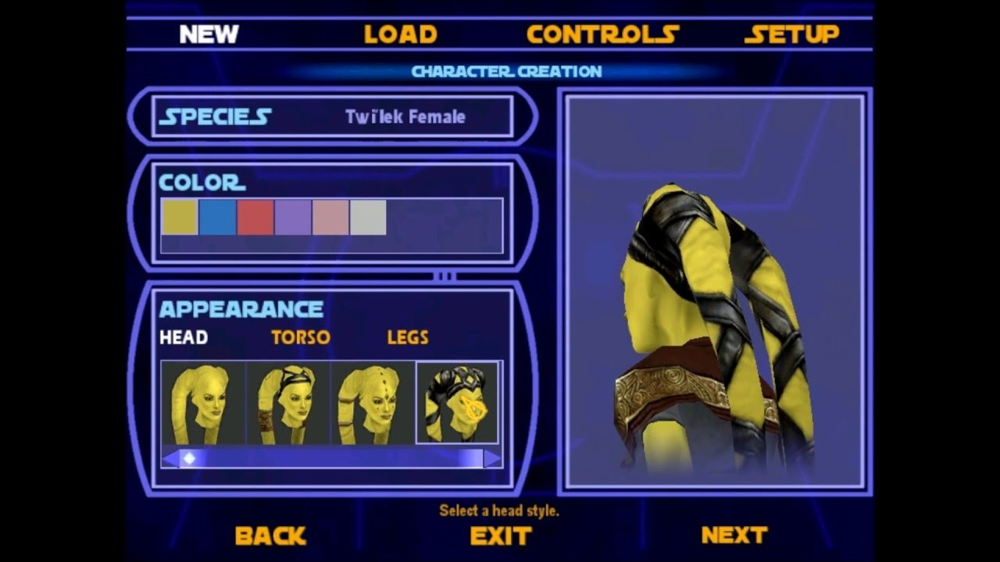
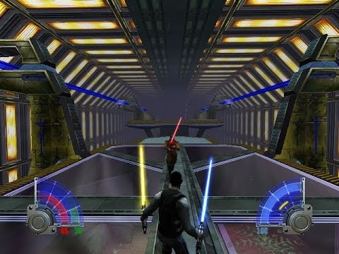
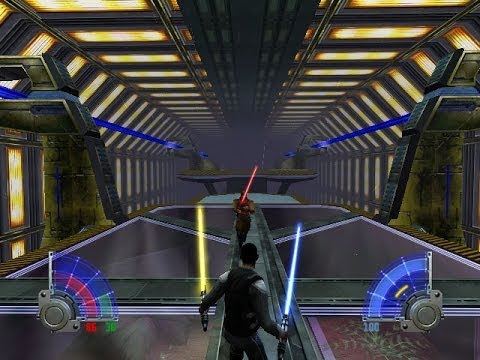

Star Wars Jedi knight 2 acedemy -
компьютерная игра в жанре шутера от первого лица/третьего лица во вселенной «Звёздных войн». Игра издана LucasArts Entertainment в США 17 сентября 2003 года для Microsoft Windows и OS X и в ноябре того же года для Xbox . Является продолжением Star Wars Jedi Knight II: Jedi Outcast.
Геймплей


Игроку даётся возможность создать своего персонажа, выбрав из пяти различных рас, можно указать пол
(впрочем оба пола доступны только для людей, родианцы и кел-доры представлены только мужчинами, тви’леки и забраки — женщинами),
и выбрать одежду. Можно менять цвет, стиль одежды, внешность.
Также можно выбрать для себя световой меч — от типа рукоятки до цвета клинка .jpg) , при этом внешний вид светового меча никак не отражается
на его характеристиках.
Перед третьим циклом заданий игры дана возможность заменить свой меч на новый:
 на выбор даются стандартный и двухклинковый мечи;
также возможен вариант с ношением двух мечей одновременно.
В процессе игры игроку необходимо выполнять разнообразные задания на различных локациях, пользоваться техникой (доступны AT-ST и Свупы),
применять различные приёмы фехтования световым мечом и акробатики, «прокачивать» своего персонажа, а также использовать
Силу (по мере прохождения игрок может выбирать для себя свои навыки Силы светлой и тёмной стороны, например, удар молнией или лечение).
Также игрок может использовать разнообразное оружие от бластерных пистолетов и винтовок до термальных детонаторов.
, при этом внешний вид светового меча никак не отражается
на его характеристиках.
Перед третьим циклом заданий игры дана возможность заменить свой меч на новый:
 на выбор даются стандартный и двухклинковый мечи;
также возможен вариант с ношением двух мечей одновременно.
В процессе игры игроку необходимо выполнять разнообразные задания на различных локациях, пользоваться техникой (доступны AT-ST и Свупы),
применять различные приёмы фехтования световым мечом и акробатики, «прокачивать» своего персонажа, а также использовать
Силу (по мере прохождения игрок может выбирать для себя свои навыки Силы светлой и тёмной стороны, например, удар молнией или лечение).
Также игрок может использовать разнообразное оружие от бластерных пистолетов и винтовок до термальных детонаторов.